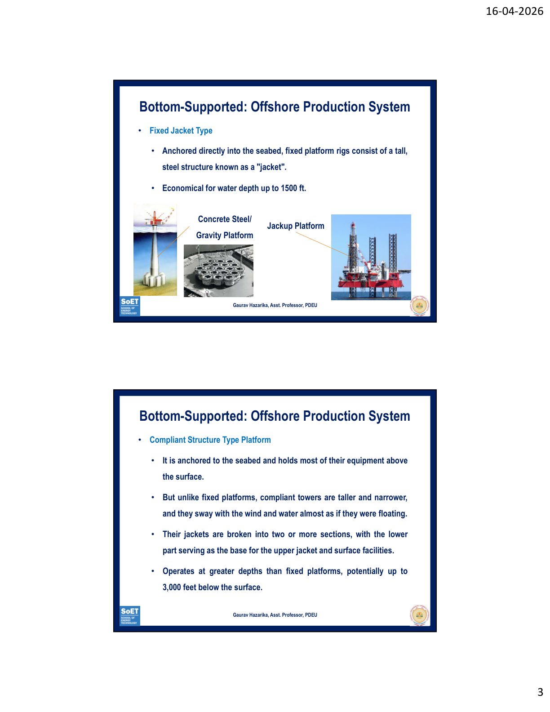
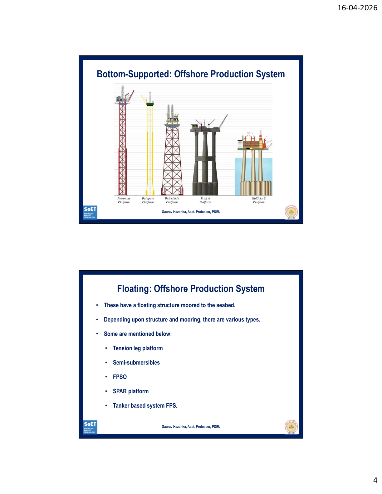
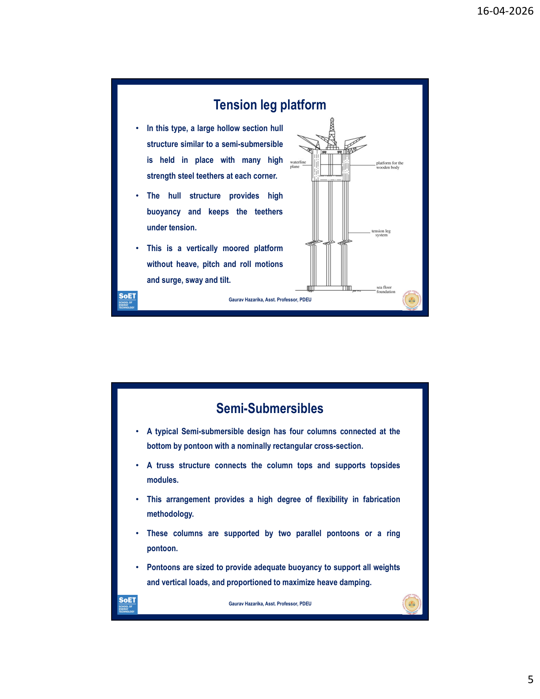
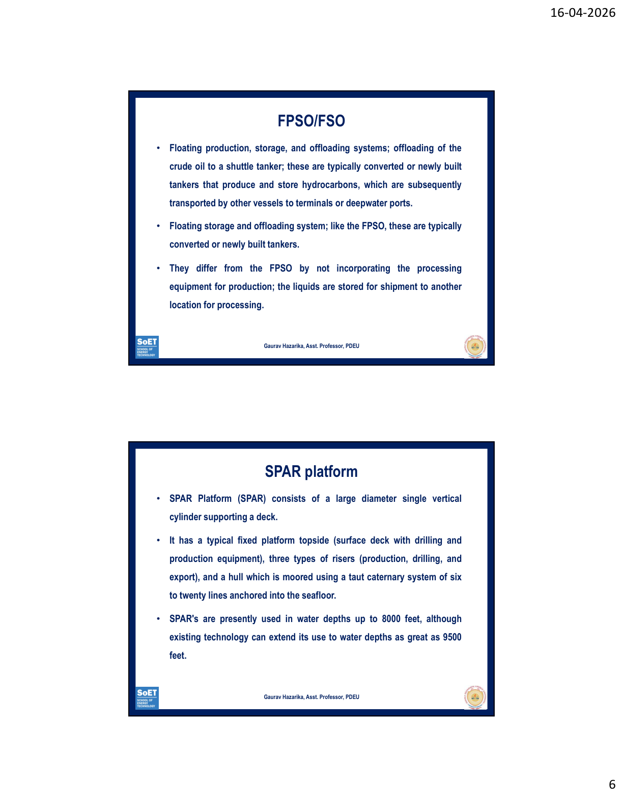

Offshore Production Systems – Fixed & Floating Platforms
Offshore engineering deals with the design and construction of structures intended to work in a stationary position in the ocean environment.
Offshore platforms are classified as either:


Mention: "The transition from fixed to compliant to floating platforms reflects the challenge of increasing water depth — as depth increases, rigid structures become uneconomical and dynamically unfeasible due to wave loads."
These have a floating structure moored to the seabed. Used in deep/ultra-deep water where bottom-supported structures are not feasible.


Draw a water depth comparison table in your answer:
Fixed Jacket → up to 1,500 ft | Compliant Tower → up to 3,000 ft | TLP/FPSO/Semi-sub → deep water | SPAR → up to 9,500 ft. This shows systematic understanding.